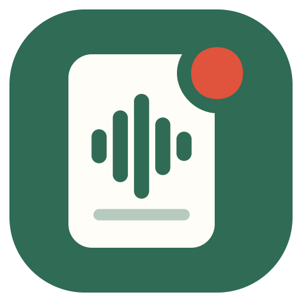

SlideScribeSlideScribe (w wersji z GitHuba: „Wykłady”) działa w całości na Twoim komputerze. Nagrania i notatki nie opuszczają komputera.
Obowiązuje od 11 października 2026 · Effective October 11, 2026
W skrócie: aplikacja nie ma kont, analityki, reklam ani telemetrii. Autor nie zbiera, nie otrzymuje i nie przechowuje żadnych Twoich danych. Wszystko, co nagrasz i co powstanie z nagrań, zostaje na Twoim komputerze.
SlideScribe tworzy Wiktor Wystrychowski (wydawca w Microsoft Store: Wikingowiec). Kontakt: wiktor.wystrychowski@gmail.com.
Wyłącznie lokalnie, na Twoim komputerze:
Wykłady zapisują się w folderze biblioteki (domyślnie Dokumenty\Wykłady), ustawienia i log w folderze danych aplikacji Windows. Rozpoznawanie mowy (faster-whisper) i tworzenie notatek (Ollama z lokalnym modelem językowym) odbywają się na Twoim komputerze – dane nie są wysyłane do żadnej usługi AI w chmurze.
Internet jest potrzebny tylko przy pierwszym uruchomieniu (i gdy wybierzesz nowy model). Aplikacja pobiera wtedy:
Przy pobieraniu te serwery widzą zwykłe dane techniczne połączenia (np. adres IP), jak przy każdym pobieraniu pliku – obowiązują wtedy ich własne zasady prywatności. Aplikacja nie wysyła do nich Twoich nagrań, notatek ani innych danych. Wersja z GitHuba sprawdza też dostępność nowych wersji na GitHubie; wersję z Microsoft Store aktualizuje Microsoft Store.
Mikrofon jest używany tylko podczas nagrywania z włączonym mikrofonem. Przechwytywanie dźwięku aplikacji i zrzuty ekranu działają tylko w trakcie nagrywania, które sam uruchamiasz. Dostęp do mikrofonu możesz w każdej chwili odebrać w Ustawieniach systemu Windows (Prywatność → Mikrofon).
Aplikacja nie ma kont użytkowników, nie wyświetla reklam, nie używa narzędzi analitycznych ani plików cookie i nie przekazuje danych nikomu – bo żadne dane do autora nie trafiają.
Dane leżą na Twoim komputerze tak długo, jak chcesz. Wykład usuniesz w aplikacji albo kasując jego folder. Po odinstalowaniu SlideScribe z Microsoft Store znikają biblioteki programu i ustawienia; wykłady w folderze biblioteki, pobrane modele mowy (%USERPROFILE%\.cache\huggingface) i modele Ollamy (%USERPROFILE%\.ollama) zostają – możesz je usunąć ręcznie.
Aplikacja nie zbiera danych, więc nie zbiera ich także od dzieci.
Jeśli ta polityka się zmieni, nowa wersja pojawi się na tej stronie z nową datą obowiązywania.
In short: the app has no accounts, analytics, ads or telemetry. The author does not collect, receive or store any of your data. Everything you record, and everything created from your recordings, stays on your computer.
SlideScribe is made by Wiktor Wystrychowski (Microsoft Store publisher: Wikingowiec). Contact: wiktor.wystrychowski@gmail.com.
Only locally, on your computer:
Lectures are saved in the library folder (by default Documents\Wykłady); settings and the log are kept in the app's Windows data folder. Speech recognition (faster-whisper) and note generation (Ollama with a local language model) run on your computer – no data is sent to any cloud AI service.
An internet connection is needed only on first launch (and when you pick a new model). The app then downloads:
Like any download, these servers see ordinary technical connection data (such as your IP address), under their own privacy policies. The app does not send them your recordings, notes or any other data. The GitHub version also checks GitHub for new versions; the Microsoft Store version is updated by the Microsoft Store.
The microphone is used only while recording with the microphone turned on. App audio capture and screenshots are active only during a recording you start yourself. You can revoke microphone access at any time in Windows Settings (Privacy → Microphone).
The app has no user accounts, shows no ads, uses no analytics tools or cookies and shares no data with anyone – because no data ever reaches the author.
Your data stays on your computer for as long as you want. Delete a lecture in the app or by removing its folder. Uninstalling SlideScribe from the Microsoft Store removes the app's libraries and settings; lectures in the library folder, downloaded speech models (%USERPROFILE%\.cache\huggingface) and Ollama models (%USERPROFILE%\.ollama) remain – you can delete them manually.
The app collects no data, so it collects no data from children either.
If this policy changes, the new version will be published on this page with a new effective date.